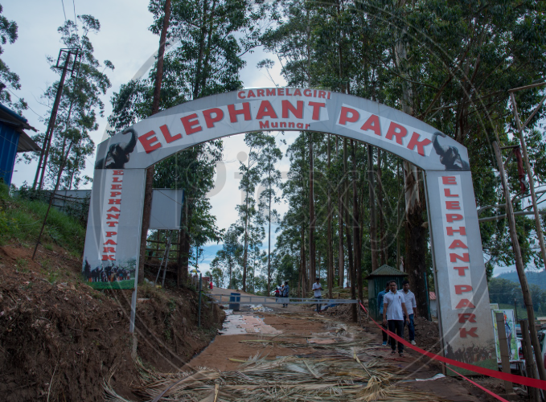
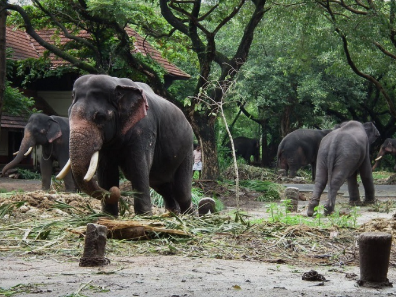
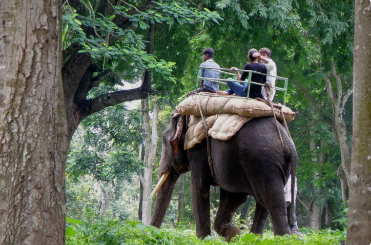

Carmelagiri Elephant Park is a popular tourist attraction located near Munnar in Idukki district, Kerala. The park offers visitors an opportunity to interact with elephants and learn about their behaviour, care, and importance in Kerala's culture. Tourists can enjoy activities such as elephant rides, feeding elephants, and taking memorable photographs with these gentle animals under the guidance of trained mahouts.
Surrounded by beautiful hills, tea plantations, and lush greenery, the park provides a peaceful natural environment for visitors. It is a favourite destination for families, children, and wildlife lovers who wish to experience elephants up close while enjoying the scenic beauty of Munnar. Carmelagiri Elephant Park offers a unique and enjoyable wildlife experience for tourists.



Carmelagiri Elephant Park is one of the most popular tourist attractions in Munnar, located on Mattupetty Road in Idukki District, Kerala. The park offers visitors a unique opportunity to interact with elephants through elephant rides, feeding sessions, bathing experiences and photography. It is surrounded by tea plantations, forests and scenic hills, making it a favourite destination for families and nature lovers.
Carmelagiri Elephant Park was established to promote responsible elephant tourism and provide visitors with opportunities to learn about elephants, Kerala's traditions and the relationship between elephants and local culture. The park has become one of the most visited attractions in Munnar. 1
Visitors can enjoy elephant rides through forest trails, feed elephants with fruits, watch elephant bathing, take photographs and learn about elephant behaviour from experienced mahouts. The park also offers cultural programmes and guided activities. 2
The park is surrounded by lush tea gardens, forests and mountain landscapes. Visitors can enjoy the cool climate and beautiful scenery while spending time with elephants.
Today, Carmelagiri Elephant Park is one of Munnar's leading wildlife tourism attractions. It welcomes thousands of visitors every year who come to enjoy elephant rides, feeding sessions, photography and the natural beauty of Munnar. 3